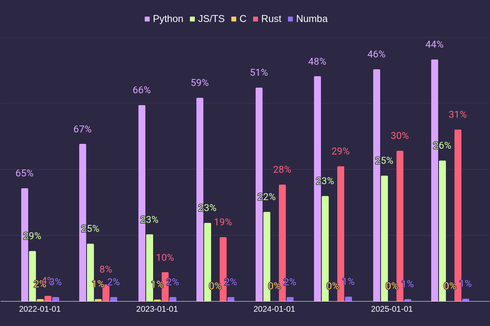

Rust
in High Frequency Trading
30 July 2025
Sander in 't Veld
Rust Meetup
@ BlockTech

### </span> - Fun - Challenging - Fast - Safe - Ambitious - Focus on what matters - Work with amazing tools - Smart people from different fields
### Why I enjoy working here</span> - Fun - Challenging - Fast - Safe - Ambitious - Focus on what matters - Work with amazing tools - Smart people from different fields
### Why Rust is great <span class="mark">in HFT</span> - Fun - Challenging - Fast - Safe - Ambitious - Focus on what matters - Work with amazing tools - Smart people from different fields
### Why Rust is great <span class="mark">in HFT</span> - Fast - 1 second is a very busy exchange - 250 ms is the average human reaction speed - 65 ms for light to cross the globe - 1 ms - 100 us - 10 us - 1 us for a thread context switch - 100ns is too slow to compete with FPGAs
### Why Rust is great <span class="mark">in HFT</span> - Safe - No segfaults - No buffer overflows* - No uninitialized data* - No memory leaks - Focus on what matters
### Why Rust is great <span class="mark">in HFT</span> - Work with amazing tools - Cargo.toml - serde - cargo fmt - cargo clippy - cargo asm
### Why <span class="mark">Rust in HFT</span> is great - Smart people from different fields - Mathematicians - Data analysts - Economists - Nerds Α α, Β β, <span class="mark">Γ</span> γ, <span class="mark">Δ</span> δ, Ε <span class="mark">ε</span>, Ζ ζ, Η η, <span class="mark">Θ</span> θ, Ι ι, Κ κ, Λ <span class="mark">λ</span>, Μ <span class="mark">μ</span>, Ν ν, Ξ ξ, Ο ο, Π <span class="mark">π</span>, <span class="mark">Ρ</span> ρ, Σ <span class="mark">σ</span> ς, Τ τ, Υ υ, Φ φ, Χ χ, Ψ ψ, Ω ω, <span class="mark">Ⅎ?</span>
### Why <span class="mark">Rust in HFT</span> is great - Fun - Challenging
### Why <span class="mark">Rust in HFT</span> is great - Fast - Safe - Ambitious
### Why <span class="mark">Rust in HFT</span> is great - Fun - Challenging - Fast - Safe - Ambitious - Focus on what matters - Work with amazing tools - Smart people from different fields